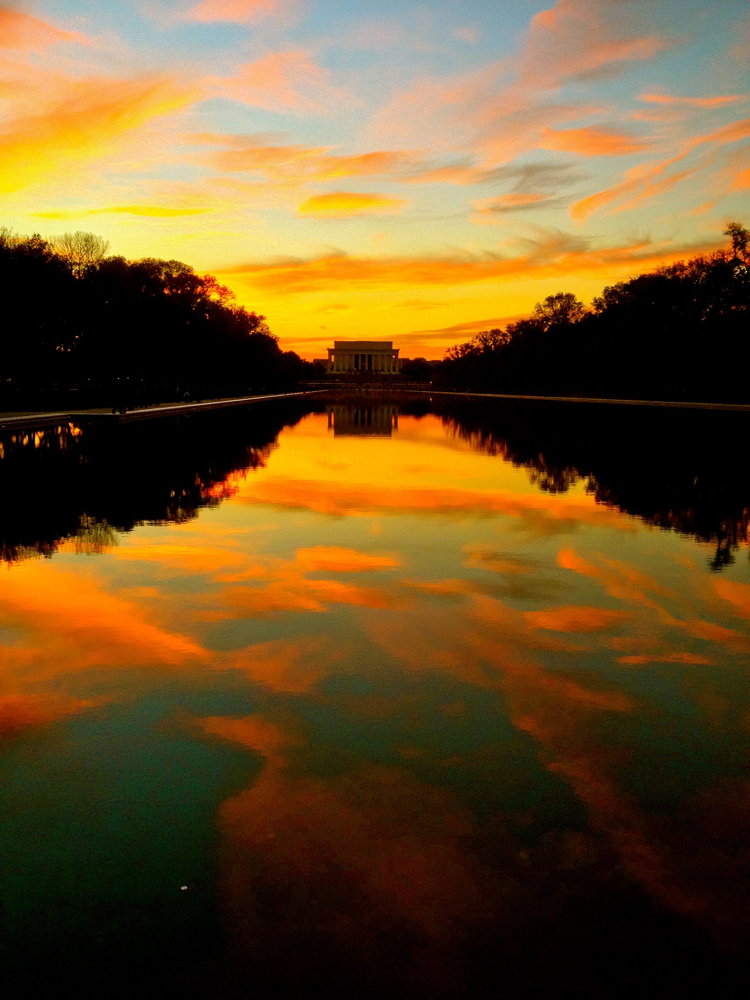
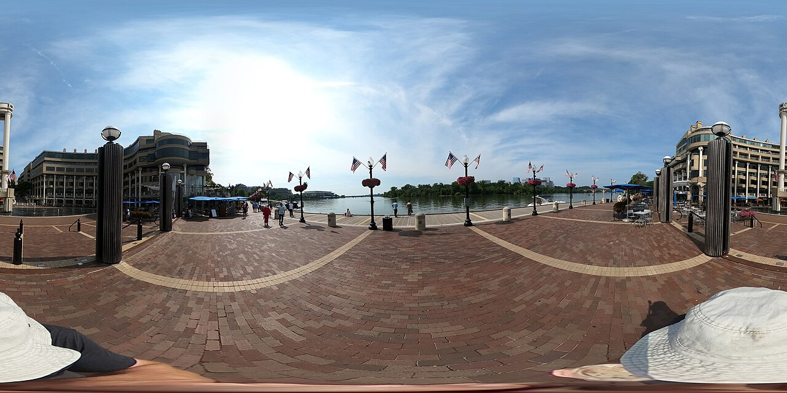
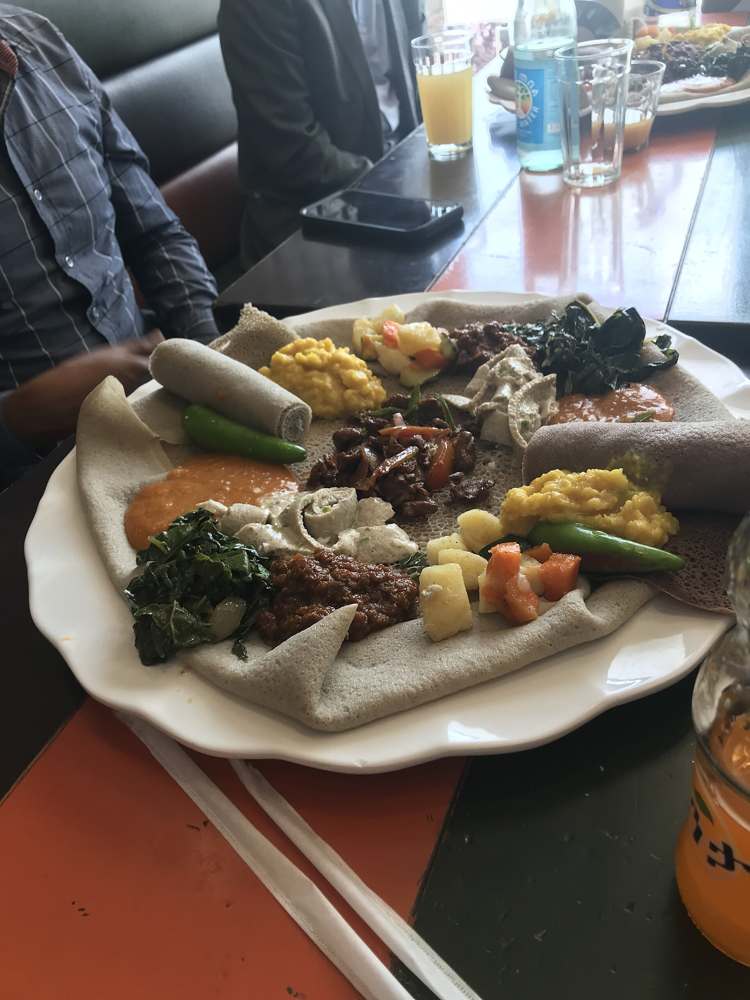

CHAPTER 04 · 9/30—10/4白天看制度，
入夜看記憶。
這不是把免費博物館塞到飽。Capitol Hill、Smithsonian 與 Monument Walk 各有自己的日子；最後一天仍能玩，但晚上必須毫無懸念地抵達 IAD。

Monuments at dusk U.S. Capitol
U.S. Capitol Library of Congress
Library of CongressSTAY9/30–10/3 · 未訂
TRAIN IN9/30 Amtrak · 未訂
FREE PASSESCapitol／LOC／Museum
FLIGHT OUT10/4 01:15 · 已開票
30SEP
WED
DAY 12 · ARRIVAL
第一眼 DC，不需要安檢。
抵達日唯一目標：住好、吃好、用 Georgetown 建立城市尺度。

Georgetown waterfrontFirst look
New flavorsUnion Station入住／寄行李GeorgetownC&O CanalWaterfront
ARRIVAL先把住宿這個變數拿掉
Union Station 抵達後直接處理入住或寄行李；不要拖著行李去 National Mall。
AFTERNOONGeorgetown 從 C&O Canal 走向河
M Street 只當穿越線，重點是磚屋、canal 與 waterfront。時間短時直接刪店鋪，不刪河岸。
EVENING提早吃一頓非三明治晚餐
選 Georgetown 或住宿附近的 Mid-Atlantic／Chesapeake 風味，讓 DC 從第一晚就和 NYC、Philly 分開。
EAT海鮮或蔬菜型完整餐；今晚先不吃 half-smoke。
RAIN SWAP縮短 canal／waterfront，改成住宿周邊休息。
GUARDRAIL抵達日不安排任何 timed-entry。
01OCT
THU
DAY 13 · CAPITOL HILL
制度、權力與知識，放在同一座山上。
Capitol 官方建議預約；安檢可能久，預約前至少 60 分鐘抵達。
U.S. CapitolLibrary of CongressNational Mall Capitol securityCapitol tourSupreme Court exteriorLibrary of CongressNational Gallery 可選
MORNINGU.S. Capitol tour 先鎖時間
預約免費但官方明確建議。提早 60 分鐘到，減少隨身物品；館內不得帶食物飲料，也沒有行李寄放。
MIDDAYSupreme Court 外觀＋午餐
不把 Court 室內參訪當必要條件。短看外觀後先補充體力，再進下一次安檢。
AFTERNOONLibrary of Congress 當真正高潮
Jefferson Building 需免費 timed-entry，票在 30 天前開放；10/1 是週四，可優先對齊 Main Reading Room walkthrough 或晚間開放。
LUNCHCapitol Hill 就近吃，避免為名店跨區再回來。
RAIN-PROOF兩個室內主角都保留；刪除傍晚 Mall 長走。
BOOKCapitol＋Library of Congress 各自需要處理 pass。
02OCT
FRI
DAY 14 · ONE MUSEUM + NIGHT WALK
白天只選一座館，晚上才是片尾。
博物館不是免費就沒有成本；注意力與腳力都要留給 Mall 西段。
Lincoln at duskSmithsonian dayMuseum focus 一間主館午休＋離館Washington Monument areaWWIILincolnKorea／Vietnam
10:00—15:00主館三選一，不做館海戰術
- Air & Space：飛行、太空、強視覺；首選
- NMAAHC：敘事厚重，需更多時間與情緒
- American History：最彈性，通常不需 general-entry pass
LATE AFTERNOON先離開室內，吃東西、坐下
不要從館門直接開始長走。補水與早晚餐後，到 Washington Monument／WWII Memorial 等光線變柔。
DUSK—NIGHT從 WWII 走到 Lincoln
Reflecting Pool → Lincoln → Korean War／Vietnam Veterans Memorials。步行順序可依天氣倒走，但不要在白天完成它。
ENERGY館內午餐不必精彩，但要讓你能走到晚上。
RAIN SWAP加長主館、把 monument walk 移到 10/3 白天。
PASSESAir & Space、NMAAHC 都要免費 timed entry；American History 一般不用。
03OCT
SAT
DAY 15 · LAST FULL DAY
白天自由，晚上絕不冒險。
10/4 01:15 的回程已開票；10/3 晚上就是實際離境日。
Flexible morningFinal mealThen IAD
選一個半日方案回住宿取行李提早 Ethiopian mealIAD01:15 departure
MORNING只選一個半日方案
- 第二間 Smithsonian：最穩
- Arlington：戶外、情緒重量高
- Dupont／Georgetown 補遺：最放鬆
LATE AFTERNOONEthiopian food 當最後完整一餐
用 injera 與多樣燉菜替整趟補上不同味道。選靠近住宿或回程路線的店，不為餐廳橫越城市。
EVENING目標 21:30–21:45 抵達 IAD
Silver Line 或 rideshare 二選一。若搭 Metro，依住宿站點與當日班距反推，並留轉乘、步行與營運異常緩衝。
FINAL MEAL提早吃，不把正餐壓到機場。
DISRUPTIONMetro 有異常或行李多時，直接改 rideshare。
NON-NEGOTIABLE先取行李、再吃飯；不得在離境前臨時加館。
THE RESERVATION STACK
DC 不是沒訂一件事，是五件。
最先處理住宿與 9/30 Amtrak；接著鎖 10/1 Capitol、10/1 Library of Congress、10/2 主館。Capitol 建議預約且需提早安檢；Library of Congress tickets 30 天前釋出；Air & Space 與 NMAAHC 目前皆需免費 timed-entry。規則可能變，網站連結都指向官方頁面。